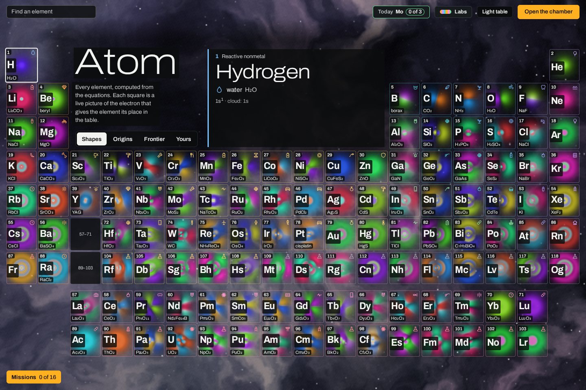
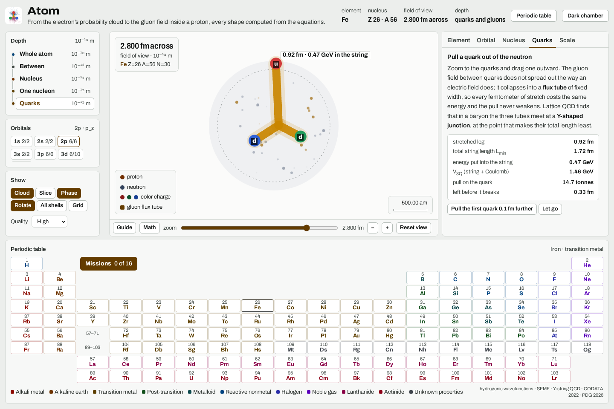

Atom
Every element, computed from the equations. Each square is a live picture of the electron that gives the element its place in the table. Pick one.
Each square is one element’s outer electron, computed live. Pick one.
Swipe the table sideways for all 18 columns.
Labs
Learn it by doing it: build atoms and molecules, explore the table's patterns, work through the math of any atom, test yourself, and run real experiments. Your progress stays in this browser.
Loading the labs…
The guided tour
Fall into iron one scroll at a time: its electron cloud, the light it gives off, the empty space inside it, its nucleus, a proton, and the quarks you can try to pull out. Every picture is computed live.
Iron’s electrons
The color is the wave’s phase. In a single state the whole cloud’s phase turns in place at one rate, faster for a more tightly bound state, and the shape never moves. Opposite colors are opposite signs, and that decides whether two atoms’ clouds add up into a bond or cancel.
Drag the stage to turn it.
Iron’s light is a fingerprint
Every element’s light is a fingerprint. Here is hydrogen’s.
Almost nothing is there
99.999 999 999 99 % of the volume of an iron atom is empty space.
A force you never feel
Per nucleon that binding peaks near iron and nickel. Fusing light nuclei climbs the curve from one side and splitting heavy ones climbs it from the other, which is the whole story of starlight and of reactors.
New in 2026: clocks that tick on a transition inside a nucleus. Thorium-229 was first excited by a laser in 2024, and in October 2026 two groups reported working nuclear clocks.
A proton is mostly energy
Keep falling, into one of iron’s 26 protons. Its three quarks, two up and one down, add up to about 9 MeV. The proton weighs 938.27 MeV. The other 99% is the energy of the gluon field and of quarks moving inside a box a femtometer wide.
Its charge radius is 0.84075 fm. The famous proton radius puzzle has largely closed: in 2026 ordinary hydrogen gave 0.8406 fm, matching the muonic measurement.
Now pull a quark out
Grab a quark and drag. The gluon field between quarks doesn’t spread out the way a magnet’s does. It stays a tube, so every femtometer costs the same energy and the pull never weakens.
- Stretched leg
- 0.40 fm
- Energy in the string
- 0.00 GeV
- Pull on the quark
- 14.7 metric tons
- Left before it breaks
- 0.85 fm
Keep pulling. Near 1.25 fm the string holds about 1.1 GeV, more than it costs to make a quark and an antiquark out of the vacuum, so it snaps instead of stretching.
The math
V3Q = −A ħc Σ 1/rij + σ Lmin
σ = 0.90 GeV/fm, the string tension. One GeV per femtometer is 1.602 × 10⁵ newtons, about 16.3 metric tons of force, so this string pulls with 14.7 metric tons, whatever its length. Lmin is the total length of the three legs, which meet at a junction where every angle is 120°. A = 0.137 is the short-range Coulomb-like part.
The potential is the Y-shaped form fitted to lattice quantum chromodynamics (QCD) by Takahashi et al. (2001, 2002). The 1.25 fm breaking distance comes from a quark–antiquark string in lattice QCD (Bali et al., 2005), computed with sea quarks heavier than real ones; using it for one leg of a proton is an approximation. What the vacuum makes when the string breaks follows from conservation alone. In 2025 this string breaking was watched directly in quantum simulators running simplified versions of the theory.
Below the quarks, fields
Keep falling and you do not find smaller pieces. Experiments that could have seen a size as small as 4 × 10⁻¹⁹ m find the electron and the quarks still behaving as points.
What physics finds instead is fields. Every kind of particle is a ripple in a field that fills all of space. Every electron is a ripple in the one electron field, which is why all electrons are exactly alike. A force is one field tugging on another, and the tug travels as a ripple too: the photon, the gluon.
Even empty space is not still. The fields jitter at their lowest energy, and the jitter is measured: it shifts hydrogen’s energy levels by about a part in a million, the Lamb shift, found in 1947.
Where mass comes from
One field is different. The Higgs field is not zero anywhere, even in empty space, and a particle that feels it is harder to speed up or slow down. That resistance is its rest mass. The electron feels the field faintly, the top quark about 340,000 times more, and the photon not at all.
Hit the field hard enough and it rings. The ring is the Higgs boson, found at CERN on July 4, 2012, at 125.13 GeV, 133 times the mass of a proton.
It is not where most of your mass comes from. The Higgs field gives the three quarks in a proton about 9 MeV. The other 99 percent of the proton, and of you, is the energy of the gluon field and of the quarks moving inside it.
The force that changes what a thing is
Three forces push and pull. The fourth, the weak force, turns one particle into another. Inside a neutron a down quark becomes an up quark, so the neutron becomes a proton. The charge that was lost leaves as a W boson, which is so heavy that it can last less than 10⁻²⁵ seconds before it becomes an electron and an antineutrino. That is beta decay, the decay carbon dating counts.
The W weighs as much as 86 protons, so the weak force reaches only about 10⁻¹⁸ m and almost never acts. That slowness is why the Sun lasts ten billion years: its first step, two protons becoming deuterium, has to wait for the weak force.
Neutrinos feel only this force and gravity. About 60 billion of them from the Sun pass through each square centimeter of you every second, and nearly all go on through the whole Earth. They come in three kinds and change from one kind to another as they fly, which can happen only if they have mass: less than 0.45 eV, under a millionth of an electron’s. Nobody knows why so little.
What nobody knows yet
Below 10⁻¹⁸ m nobody has seen anything: electrons and quarks are still points. The open questions aren’t about smaller pieces, they’re about why the pieces behave as they do. Each is labeled with where it stands.
- Open
What is the dark matter?
Galaxies hold together as if they carried five times more matter than the kind in this table. Nothing in the Standard Model fits it, and no detector has caught a particle of it.
- Open
How does gravity fit?
Gravity is the one force with no place in the Standard Model. A quantum theory of it should matter at the Planck length, 1.6 × 10⁻³⁵ m, sixteen powers of ten below anything tested. String theory and loop quantum gravity are attempts; neither has made a prediction that an experiment has confirmed.
- Open
Why three families?
Everything in this table needs only the up quark, the down quark, and the electron. Nature made two heavier copies of each, and a neutrino for each of the three. Experiments at CERN counted the neutrino kinds: 2.996 ± 0.007. Nobody knows why three.
- Open
Why can’t a quark ever escape?
Computers reproduce confinement, but nobody has proved the theory requires it. Doing so, the Yang–Mills mass gap, is one of the seven Millennium Prize problems.
- Open
Where does the proton’s spin come from?
Quark spins supply only about 30%. The Electron-Ion Collider, now being built in Brookhaven’s old collider tunnel, should settle the rest in the mid-2030s.
- Claim
Is there a particle made only of glue?
In 2026 the BESIII experiment reported that X(2370) is mostly a glueball. One experiment’s reading, not yet confirmed by anyone else.
- Unresolved
How long does a free neutron live?
877.8 seconds in a bottle, 887.7 in a beam. Ten seconds apart, about four standard deviations. A beam experiment that counts the electrons instead of the protons (J-PARC, 2024) sides with the bottles, which points the finger at the proton-counting beams.
- Open
Why does the strong force respect mirrors?
The theory allows the neutron’s charge to be lopsided, yet none is seen: the knob that would tilt it must be set below one part in ten billion. That is the strong CP problem; a particle called the axion is one proposed answer.
- Open
Why is there matter at all?
The Big Bang should have made equal amounts of matter and antimatter. Antihydrogen falls down, not up (2023, measured to about 20%), and the missing asymmetry is still missing.
- New
A clock inside a nucleus
Thorium-229’s nuclear transition was laser-excited in 2024, and the first working nuclear clocks were reported in October 2026 (Toscani De Col et al.; Huang et al.), still less stable than the best atomic clocks.
- Settled
Two famous anomalies, closed
The muon’s magnetism now agrees with theory once lattice QCD is used for the hardest piece (2025), and hydrogen settled the proton’s radius at 0.84 fm (2026).
That is as far down as anyone has looked. Where to next?
Take it with you
The app opens on the same table and goes deeper: every orbital of every element, the nuclear shell model, decay chains, and a guided tour. It is a single file of HTML, CSS, and JavaScript: no network access, no tracking. Run it on a Mac, on Windows, or on Linux, or open it in any modern browser. It is free and open source.
Teaching with it? A link for every lab, worksheets with answer keys, turn-in codes, and the standards map.


Mac: Apple silicon or Intel, macOS 12 or later. Windows: 10 or 11, 64-bit, with an installer or a portable zip. Linux: 64-bit, as an AppImage for any distribution or a .deb for Debian and Ubuntu. The builds aren’t signed by Apple or Microsoft yet, so the first launch asks you to confirm it once: on a Mac, choose Open Anyway in System Settings, under Privacy & Security; on Windows, choose More info, then Run anyway. Every file’s checksum is on the releases page, and the source code is on GitHub.